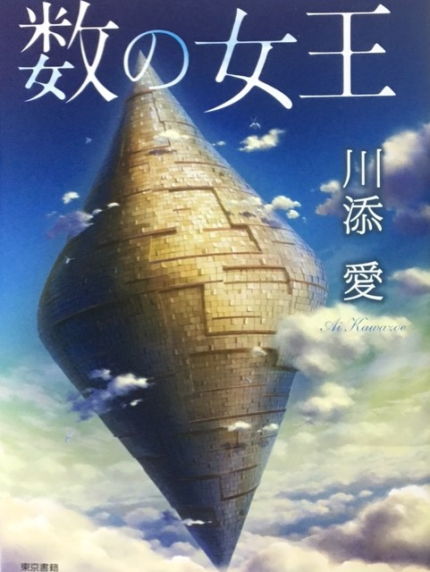

装画制作のお仕事

7月15日より東京書籍から発売の『数の女王』。
言語学者、川添愛先生著のファンタジー小説です。
今回こちらの本の装画を描かせていただきました。
装画制作は初めてでしたが、憧れていたので仕事なので気合いを入れて描きました。
内容は数をテーマにした物語で、ファンタジーと数字という独特な組み合わせの世界観。
大扉の絵も描かせていただき、実物を見たときは印刷の美しさに驚きましたね。
ぜひとも実物を手にとっていただき、主人公ナジャと登場人物たちの冒険を楽しんでいただきたいですね。
ちなみに登場するキャラクターたちも描かせていただきました。店頭に人物紹介のリーフレットが置かれていれば見ることがきるかもしれません。
個性豊かなキャラクターたちを描くのは楽しかったです。
装丁画の仕事についても経験を積むことができたので、とても良い経験になりました。